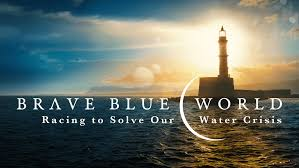
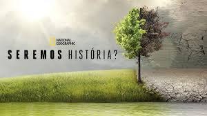
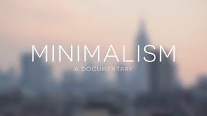

Ações que Transformam o Mundo
Olá, Bem-vindo á esta página, aqui, você verá alguns assuntos que de fato impactam no nosso dia-a-dia, e que transformarão o futuro em que viveremos, para isso, separei cada parte desse assunto em tópicos que são muito importantes.
Como pode perceber, existe um círculo no topo desta página que representa os 4 tópicos que serão falados aqui, cada um desses tópicos representam temas específicos como:
Sustentabilidade
Educação
Coletividade
Tecnologia
E também no canto superior direito você pode alterar a linguagem ou o tema para uma maior acessibilidade de leitura.
Enfim, confira o conteúdo abaixo.
Sustentabilidade

O que claramente podemos citar aqui são ações sustentáveis que, de fato, transformam não só o mundo, mas sim quem somos.
Jogar o lixo no lugar correto, cuidar das árvores e plantas, e até mesmo plantá-las, reflete em um ambiente muito melhor para o ser humano conviver.
É claro que ações que transformam o mundo podem ser sustentáveis, isso é o que mais precisamos no momento, em muitos lugares do mundo vemos poluição, destruição ambiental, queimadas e devastação, e a sustentabilidade é a chave para termos um futuro potencialmente melhor. Você também faz parte disso, aliás, todos nós fazemos, a natureza nos beneficia com seus recursos naturais, por que não podemos contribuir com ela também? Não é mesmo?
Educação

Mais uma das ações que são muito importantes para o nosso futuro é a educação, pois é a educação que modela o que nós planejamos ser futuramente, e obviamente, impulsionar a nossa produtividade para adentrar o mundo do trabalho.
Mas não é só para trabalhar que nós vamos para a escola ou qualquer outra instituição de ensino, nós também aprendemos a conviver com o mundo, com a sua história, com seus mecanismos, por isso que muitas vezes ensinar alguém a algo pode ser algo transformador, pois você está transmitindo uma informação a alguêm que provavelmente a utilizará em algum momento da vida.
A educação também abrange temas muito importantes para incentivar a prática de atividades inovadoras, que abrangem temas também citados aqui como a tecnologia e a sustentabilidade.
Coletividade

O mundo não seria o que é hoje sem agirmos em conjunto, sim, mais um tópico que trata sobre a relevância de transformar o nosso mundo é a coletividade, pois várias pessoas investindo em um projeto ou uma ação boa é o essencial para gerar mudanças em grande escala.
Esse é um assunto muito importante para tratarmos, pois a atualidade está se tornando cada vez mais induvidualista, onde as pessoas buscam cada vez menos agir ou participar de grupos e comunidades, isso traz alguns malefícios para a sociedade em geral como desigualdades, falta de aceitação, baixa estima, dentre outros problemas psicológicos e sociais.
Desde os tempos primordiais do ser humano, nós apenas evoluímos em coletivo, e a coletividade nos propõe uma ampla variedade de coisas que não podemos fazer sozinhos. E por isso podemos aplicar isso ao nosso cotidiano, não podemos transformar o mundo apenas sozinhos, mas precisamos da cooperação e ajuda de todos como um só, ajudando na natureza, preservando matérias-primas e procurando novas soluções para problemas que vamos enfrentando no dia-a-dia.
Wow, todos esses textos cansam de ler, não é? Bem, vou recomendar alguns filmes e documentários abaixo se você realmente se interessa nesses assuntos:
Brave Blue World (2020)
Seremos História? (2016)
Minimalism: A Documentary About the Important Things (2015)
Ok, essas são as recomendações, podem ser poucas mas já é um início, você pode encontrar muito mais filmes, séries, documentários e livros que falam sobre os tópicos desta página na internet. Vamos continuar para o próximo assunto:
Tecnologia

A tecnologia é a nossa ferramenta para fazer as mudanças acontecerem. O desenvolvimento e a evolução do nosso conhecimento fornece uma maior oportunidade de mudarmos o mundo e o nosso futuro.
Por isso a tecnologia é o que irá transformar o nosso mundo, pois com a tecnologia nós podemos desenvolver novas formas de preservar fontes naturais e nossa vida pessoal, tudo em um momento tão necessário como agora.
Vale ressaltar que todos os assuntos aqui são de extrema importância, a geração atual está e irá sofrer mudanças severas futuramente, e principalmente no meio ambiente. Como as geleiras das regiões árticas que derretem dia após dia, o calor extremo que ocorre na região européia, desmatamentos, queimadas, e as demais descobertas como o avanço da inteligência artificial, o metaverso, realidade virtual, processadores quânticos, carros e eletrônicos inteligentes, e muito mais que ainda vem por aí, por isso a tecnologia é o que continuará inovando nossas vidas.
E essas são as verdadeiras ações que transformarão o mundo.
Mas nada disso seria importante sem vocês, trabalhadores que passam dia após dia se esforçando por um mundo melhor, professores que investem no futuro e na vida de estudantes, alunos que se dedicam para serem futuros empreendedores ou profissionais, e muitas outras pessoas, que compõem uma sociedade em um mundo que está em constante transformação.
Agradeço por ter visualizado este projeto no qual passei dias me dedicando, é um prazer fazer parte de um projeto que trata sobre um tema tão incrível para as nossas vidas. Obrigado.

Este obra está licenciado com uma Licença Creative Commons Atribuição 4.0 Internacional.
Este site foi desenvolvido por @Zackmaster36. Todos os direitos reservados.
Curitiba, Paraná, Brasil. 2023.